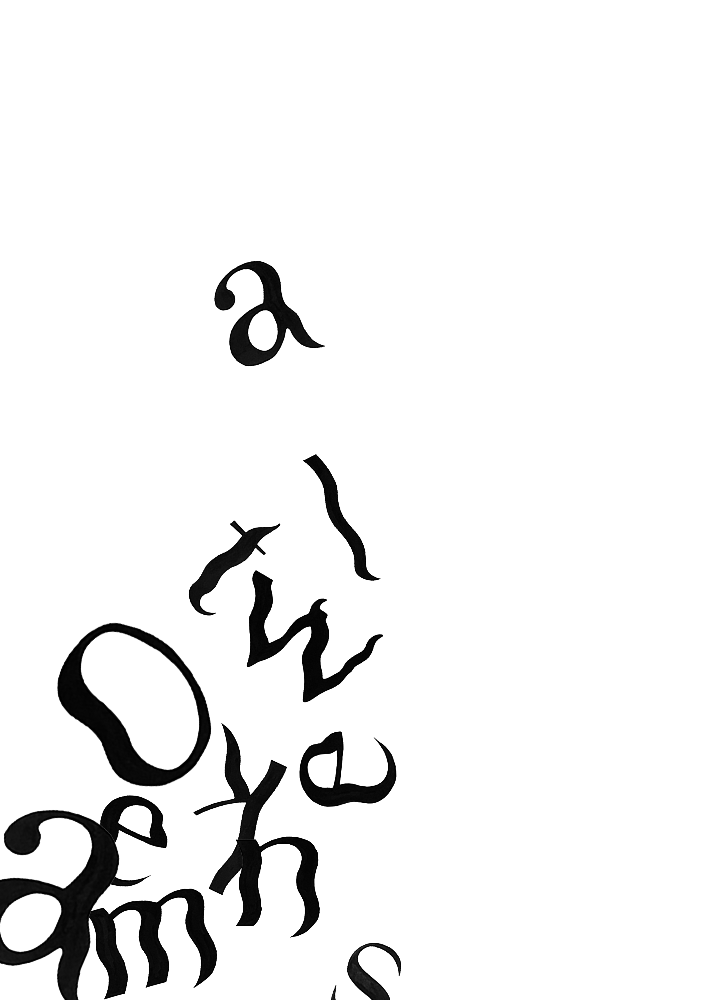

CARACTÈRE
2023
encre de Chine
typographie
Réalisation d’une police de caractères à la main imaginée à partir de la modification de la police Bodoni. Par groupe de deux, nous avons choisi de réaliser une typographie avec un fort contraste entre les pleins et les déliés. Nous avons aussi modifié la chasse, les fûts... Les formes ondulées amènent du mouvement aux lettres. À l’aide de l’encre de chine nous les avons dessinées en essayant de composer selon le titre de notre chanson choisie au préalable. J’ai choisi de créer un effet d’entremêlement pour renforcer l’idée de mouvement et répondre à cette affirmation vague : « Still don’t know my name » de Labrinth.